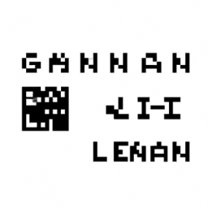

How to learn LangChain and GenAI?
With the rise of AI and ML, the demand for applications to be developed using these technologies have been growing. GenAI is one of the most advanced AI technologies currently available. It has been used to develop applications that can solve complex problems, such as natural language processing (NLP) and machine learning (ML). LangChain is a subset of GenAI and is used for creating language-based models and applications.
In this blog post, I will explain how to learn GenAI and LangChain. First, it’s important to understand the basics of AI and ML. There are many online courses, tutorials, and books available to help you understand these topics. Additionally, there are language libraries, such as Python, that can help you build models and applications.
Once you have a basic understanding of AI and ML, it’s time to dive into GenAI and LangChain. GenAI has a robust set of libraries and tools to help you develop applications. LangChain, on the other hand, is a subset of GenAI and is used to develop language-based models and applications. The main advantage of using LangChain is that it allows developers to create applications that are more specific to a language and its grammar.
Finally, to get started with GenAI and LangChain, you should look into tutorials and courses offered by various online platforms. Additionally, there are many online forums and communities that can provide helpful advice and tips. With the right resources and guidance, it is possible to learn GenAI and LangChain quickly and easily.